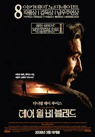

데어 윌 비 블러드

2007 | 드라마 | 미국
폴 토마스 앤더슨 감독
1898년 지독한 알콜 중독자에 홀로 아들을 키우며 사막 한가운데서 금을 캐는 무일푼 광부. 어느날 이곳에서 그는 석유 유전을 발굴하면서 일확천금의 행운을 누리게 된다.
야심찬 석유 개발과 함께 시작된 야망과 꿈은 어느새 탐욕과 폭력으로 바뀌게 되고, 과거의 인간성은 보이지 않는다.
언젠가부터 메소드 연기라는 극중 역할에 심취한 배우들의 연기 방식이 유행하기 시작했습니다. 다니엘 데이 루이스는 메소드 연기의 대표적인 배우로 뽑히는데, 그와 함께 폴 다노는 극중에서 인간의 밑바닥을 드러내는 소름끼치는 연기를 보여줍니다.